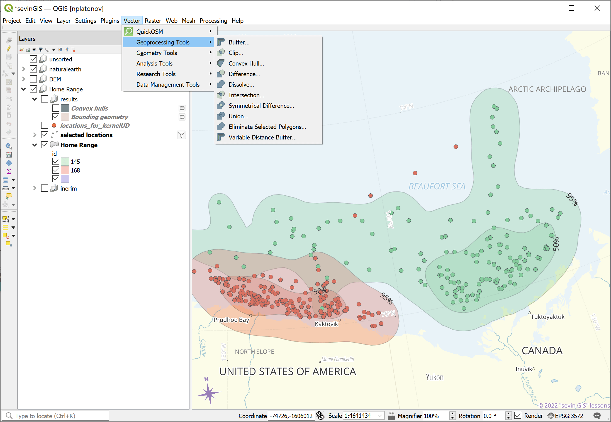

layout: true .banner[ .shorttitle[ [ГИС аспирантура](break.html#home) ] ] --- class: metadata customtitle middle left giphy name: H32169 <iframe width='220' height='220' class='timenow' src='https://www.timeanddate.com/worldclock/fullscreen.html?n=1440' frameborder='0' allow='encrypted-media' allowfullscreen></iframe> .sidebar.left-column[ ## [Инструменты QGIS](#difference) ## [Данные и методы](#H63e8e) ## [Валидность](#Hffe00) ## [Связь "Атрибут-геометрия"](#H586f2) ## [Преобразование](#H490ec) ## [Объединение](#Hd3259) ## [Центроид](#H623b5) ## [Буфер](#He7ade) ## [Пересечение](#H9ad0d) ## [Охват](#H1705b) ## [Сегментация](#Hea1c0) ## [Упрощение](#Hee820) ] .mainbar.right-column[ .author[Никита Платонов] .institute[с.н.с. ИПЭЭ РАН] .title[Операции с геометрией] .subtitle[ГИС технологии в биологических исследованиях] .what[Занятие 08] .where[] .when[ .updated[Обновлено: 2024-04-03 13:27]] ] --- name: difference .sidebar.left-column[ ## [Инструменты QGIS](#difference).fg[] ### ["Геообработка"](#difference).fg[].bg[] ### ["Геометрия"](#Hfa390) ## [Данные и методы](#H63e8e) ## [Валидность](#Hffe00) ## [Связь "Атрибут-геометрия"](#H586f2) ## [Преобразование](#H490ec) ## [Объединение](#Hd3259) ## [Центроид](#H623b5) ## [Буфер](#He7ade) ## [Пересечение](#H9ad0d) ## [Охват](#H1705b) ## [Сегментация](#Hea1c0) ## [Упрощение](#Hee820) ] .mainbar.right-column[  ] --- name: Hfa390 .sidebar.left-column[ ## [Инструменты QGIS](#difference).fg[] ### ["Геообработка"](#difference) ### ["Геометрия"](#Hfa390).fg[].bg[] ## [Данные и методы](#H63e8e) ## [Валидность](#Hffe00) ## [Связь "Атрибут-геометрия"](#H586f2) ## [Преобразование](#H490ec) ## [Объединение](#Hd3259) ## [Центроид](#H623b5) ## [Буфер](#He7ade) ## [Пересечение](#H9ad0d) ## [Охват](#H1705b) ## [Сегментация](#Hea1c0) ## [Упрощение](#Hee820) ] .mainbar.right-column[ <img src="assets/lesson08/QGIS-geometry.png" width="1330" height="568" style="display: block; margin: auto;" /> ] --- name: H63e8e .sidebar.left-column[ ## [Инструменты QGIS](#difference) ## [Данные и методы](#H63e8e) <span class="bullet bullet-active">[•](#H63e8e)</span><span class="bullet mslide9m">[•](#Ha5c44)</span><span class="bullet mslide10m">[•](#Hc9837)</span>.fg[].bg[] ## [Валидность](#Hffe00) ## [Связь "Атрибут-геометрия"](#H586f2) ## [Преобразование](#H490ec) ## [Объединение](#Hd3259) ## [Центроид](#H623b5) ## [Буфер](#He7ade) ## [Пересечение](#H9ad0d) ## [Охват](#H1705b) ## [Сегментация](#Hea1c0) ## [Упрощение](#Hee820) ] .mainbar.right-column[ Пакет для визуализации: `tmap`. ```r require(tmap) ``` ``` Loading required package: tmap ``` ``` Breaking News: tmap 3.x is retiring. Please test v4, e.g. with remotes::install_github('r-tmap/tmap') ``` ```r tmap_mode("view") ## plot view ``` ``` tmap mode set to interactive viewing ``` Пакет для геообработки: `sf`. [Шпаргалка](https://github.com/r-spatial/sf/wiki/Migrating) по миграции между `sp` и `sf`: <iframe src="https://github.com/r-spatial/sf/wiki/Migrating" width="1330" height="300" data-external="1"></iframe> ] --- name: Ha5c44 .sidebar.left-column[ ## [Инструменты QGIS](#difference) ## [Данные и методы](#H63e8e) <span class="bullet bullet">[•](#H63e8e)</span><span class="bullet bullet-active">[•](#Ha5c44)</span><span class="bullet mslide10m">[•](#Hc9837)</span>.fg[].bg[] ## [Валидность](#Hffe00) ## [Связь "Атрибут-геометрия"](#H586f2) ## [Преобразование](#H490ec) ## [Объединение](#Hd3259) ## [Центроид](#H623b5) ## [Буфер](#He7ade) ## [Пересечение](#H9ad0d) ## [Охват](#H1705b) ## [Сегментация](#Hea1c0) ## [Упрощение](#Hee820) ] .mainbar.right-column[ ```r hr <- sf::st_read("data/hr.geojson",quiet=TRUE) |> sf::st_transform(3572) sf::st_agr(hr) <- "constant" hr2 <- lapply(unique(hr$id),function(id) { hr2 <- hr[hr$id==id,] ulevel <- unique(hr2$level) hr3 <- lapply(ulevel,function(level) hr2[hr2$level==level,]) names(hr3) <- ulevel hr4 <- list('50-95'=sf::st_difference(sf::st_geometry(hr3[["95"]]) ,sf::st_geometry(hr3[["50"]])) ,'0-50'=sf::st_geometry(hr3[["50"]]) ) sf::st_sf(id=id,level=names(hr4) ,geometry=do.call(rbind,hr4),crs=sf::st_crs(hr)) }) hr2 <- do.call(rbind,hr2) hr2 <- sf::st_transform(hr2,4326) hr2$group <- paste(hr2$id,hr2$level,sep=":") ``` ] --- name: Hc9837 .sidebar.left-column[ ## [Инструменты QGIS](#difference) ## [Данные и методы](#H63e8e) <span class="bullet bullet">[•](#H63e8e)</span><span class="bullet bullet">[•](#Ha5c44)</span><span class="bullet bullet-active">[•](#Hc9837)</span>.fg[].bg[] ## [Валидность](#Hffe00) ## [Связь "Атрибут-геометрия"](#H586f2) ## [Преобразование](#H490ec) ## [Объединение](#Hd3259) ## [Центроид](#H623b5) ## [Буфер](#He7ade) ## [Пересечение](#H9ad0d) ## [Охват](#H1705b) ## [Сегментация](#Hea1c0) ## [Упрощение](#Hee820) ] .mainbar.right-column[ ```r m1 <- tm_shape(hr2)+tm_polygons("group",alpha=0.5,group="Kernel levels") ``` ```r try(print(m1)) ``` ``` Linking to GEOS 3.11.2, GDAL 3.8.2, PROJ 9.3.1; sf_use_s2() is TRUE ``` ``` Error : Shape contains invalid polygons. Please fix it or set tmap_options(check.and.fix = TRUE) and rerun the plot ``` ] --- name: Hffe00 .sidebar.left-column[ ## [Инструменты QGIS](#difference) ## [Данные и методы](#H63e8e) ## [Валидность](#Hffe00) <span class="bullet bullet-active">[•](#Hffe00)</span><span class="bullet mslide13m">[•](#H508a2)</span>.fg[].bg[] ## [Связь "Атрибут-геометрия"](#H586f2) ## [Преобразование](#H490ec) ## [Объединение](#Hd3259) ## [Центроид](#H623b5) ## [Буфер](#He7ade) ## [Пересечение](#H9ad0d) ## [Охват](#H1705b) ## [Сегментация](#Hea1c0) ## [Упрощение](#Hee820) ] .mainbar.right-column[ ```r sf::st_is_valid(hr2) ``` ``` [1] TRUE FALSE TRUE FALSE ``` ```r if (length(ind <- which(!sf::st_is_valid(hr2)))) hr2[ind,] <- sf::st_make_valid(hr2[ind,]) sf::st_is_valid(hr2) ``` ``` [1] TRUE TRUE TRUE TRUE ``` ```r hr2 ``` ``` Simple feature collection with 4 features and 3 fields Geometry type: GEOMETRY Dimension: XY Bounding box: xmin: -153.1044 ymin: 69.42322 xmax: -128.2873 ymax: 76.15215 Geodetic CRS: WGS 84 id level geometry group 1 145 50-95 MULTIPOLYGON (((-153.1044 7... 145:50-95 2 145 0-50 POLYGON ((-138.281 70.63453... 145:0-50 3 168 50-95 POLYGON ((-152.4999 71.1491... 168:50-95 4 168 0-50 POLYGON ((-150.1846 70.6716... 168:0-50 ``` ] --- name: H508a2 .sidebar.left-column[ ## [Инструменты QGIS](#difference) ## [Данные и методы](#H63e8e) ## [Валидность](#Hffe00) <span class="bullet bullet">[•](#Hffe00)</span><span class="bullet bullet-active">[•](#H508a2)</span>.fg[].bg[] ## [Связь "Атрибут-геометрия"](#H586f2) ## [Преобразование](#H490ec) ## [Объединение](#Hd3259) ## [Центроид](#H623b5) ## [Буфер](#He7ade) ## [Пересечение](#H9ad0d) ## [Охват](#H1705b) ## [Сегментация](#Hea1c0) ## [Упрощение](#Hee820) ] .mainbar.right-column[ ```r m1v <- tm_shape(hr2)+tm_polygons("group",alpha=0.5,group="Kernel levels") ``` ```r m1v ``` <div class="figure"> <div class="framed" style="height:535px; width=100%"> <iframe src="assets/lesson08/widget_wm1v_51642b3f2dfe608c8582f752945f27cd.html" width="100%" height="535" class="ursa-widgetize"></iframe> </div> </div> .indent[ ] ] --- name: H586f2 .sidebar.left-column[ ## [Инструменты QGIS](#difference) ## [Данные и методы](#H63e8e) ## [Валидность](#Hffe00) ## [Связь "Атрибут-геометрия"](#H586f2).fg[].bg[] ## [Преобразование](#H490ec) ## [Объединение](#Hd3259) ## [Центроид](#H623b5) ## [Буфер](#He7ade) ## [Пересечение](#H9ad0d) ## [Охват](#H1705b) ## [Сегментация](#Hea1c0) ## [Упрощение](#Hee820) ] .mainbar.right-column[ ```r sf::st_agr(hr2) <- "constant" attr(hr2,"agr") ``` ``` id level group constant constant constant Levels: constant aggregate identity ``` ```r levels(attr(hr2,"agr")) ``` ``` [1] "constant" "aggregate" "identity" ``` + `"constant"` - атрибут постоянны по всей геометрии (землепользование) + `"aggregate"` - атрибут агрегированы по геометрии (плотность населения) + `"identity"` - однозначное идентифицирование (название города) ] --- name: H490ec .sidebar.left-column[ ## [Инструменты QGIS](#difference) ## [Данные и методы](#H63e8e) ## [Валидность](#Hffe00) ## [Связь "Атрибут-геометрия"](#H586f2) ## [Преобразование](#H490ec).fg[] ### [В полигоны](#H490ec).fg[].bg[] ### [В мультиполигоны](#He5031) ### [В линии](#H49365) ### [В точки](#H3faa4) ## [Объединение](#Hd3259) ## [Центроид](#H623b5) ## [Буфер](#He7ade) ## [Пересечение](#H9ad0d) ## [Охват](#H1705b) ## [Сегментация](#Hea1c0) ## [Упрощение](#Hee820) ] .mainbar.right-column[ ```r (hr_poly <- sf::st_cast(hr,"POLYGON")) ``` ``` Simple feature collection with 5 features and 3 fields Attribute-geometry relationships: constant (3) Geometry type: POLYGON Dimension: XY Bounding box: xmin: -109626 ymin: -2254479 xmax: 779252.1 ymax: -1438563 Projected CRS: WGS 84 / North Pole LAEA Alaska id area level geometry 1 145 200163.21 95 POLYGON ((-108821 -2033301,... 1.1 145 200163.21 95 POLYGON ((543191.4 -1457301... 2 145 35748.68 50 POLYGON ((437079.1 -2107065... 3 168 73098.40 95 POLYGON ((-90920.86 -210402... 4 168 17253.45 50 POLYGON ((-6920.856 -214782... ``` ```r units::set_units(sum(sf::st_area(hr_poly)),km^2) ``` ``` 326263.7 [km^2] ``` ] --- name: He5031 .sidebar.left-column[ ## [Инструменты QGIS](#difference) ## [Данные и методы](#H63e8e) ## [Валидность](#Hffe00) ## [Связь "Атрибут-геометрия"](#H586f2) ## [Преобразование](#H490ec).fg[] ### [В полигоны](#H490ec) ### [В мультиполигоны](#He5031).fg[].bg[] ### [В линии](#H49365) ### [В точки](#H3faa4) ## [Объединение](#Hd3259) ## [Центроид](#H623b5) ## [Буфер](#He7ade) ## [Пересечение](#H9ad0d) ## [Охват](#H1705b) ## [Сегментация](#Hea1c0) ## [Упрощение](#Hee820) ] .mainbar.right-column[ ```r (hr_mpoly <- sf::st_cast(hr,"MULTIPOLYGON")) ``` ``` Simple feature collection with 4 features and 3 fields Attribute-geometry relationships: constant (3) Geometry type: MULTIPOLYGON Dimension: XY Bounding box: xmin: -109626 ymin: -2254479 xmax: 779252.1 ymax: -1438563 Projected CRS: WGS 84 / North Pole LAEA Alaska id area level geometry 1 145 200163.21 95 MULTIPOLYGON (((-108821 -20... 2 145 35748.68 50 MULTIPOLYGON (((437079.1 -2... 3 168 73098.40 95 MULTIPOLYGON (((-90920.86 -... 4 168 17253.45 50 MULTIPOLYGON (((-6920.856 -... ``` ```r units::set_units(sum(sf::st_area(hr_mpoly)),km^2) ``` ``` 326263.7 [km^2] ``` ```r units::set_units(sum(sf::st_length(hr_mpoly)),km) ``` ``` 0 [km] ``` ] --- name: H49365 .sidebar.left-column[ ## [Инструменты QGIS](#difference) ## [Данные и методы](#H63e8e) ## [Валидность](#Hffe00) ## [Связь "Атрибут-геометрия"](#H586f2) ## [Преобразование](#H490ec).fg[] ### [В полигоны](#H490ec) ### [В мультиполигоны](#He5031) ### [В линии](#H49365) <span class="bullet bullet-active">[•](#H49365)</span><span class="bullet mslide20m">[•](#He2ae2)</span>.fg[].bg[] ### [В точки](#H3faa4) ## [Объединение](#Hd3259) ## [Центроид](#H623b5) ## [Буфер](#He7ade) ## [Пересечение](#H9ad0d) ## [Охват](#H1705b) ## [Сегментация](#Hea1c0) ## [Упрощение](#Hee820) ] .mainbar.right-column[ ```r (hr_mline <- sf::st_cast(hr2,"MULTILINESTRING")) ## sf::st_boundary() ``` ``` Simple feature collection with 4 features and 3 fields Attribute-geometry relationships: constant (3) Geometry type: MULTILINESTRING Dimension: XY Bounding box: xmin: -153.1044 ymin: 69.42322 xmax: -128.2873 ymax: 76.15215 Geodetic CRS: WGS 84 id level group geometry 1 145 50-95 145:50-95 MULTILINESTRING ((-153.1044... 2 145 0-50 145:0-50 MULTILINESTRING ((-138.281 ... 3 168 50-95 168:50-95 MULTILINESTRING ((-152.4999... 4 168 0-50 168:0-50 MULTILINESTRING ((-150.1846... ``` ```r units::set_units(sum(sf::st_area(hr_mline)),km^2) ``` ``` 0 [km^2] ``` ```r units::set_units(sum(sf::st_length(hr_mline)),km) ``` ``` 6748.012 [km] ``` ] --- name: He2ae2 .sidebar.left-column[ ## [Инструменты QGIS](#difference) ## [Данные и методы](#H63e8e) ## [Валидность](#Hffe00) ## [Связь "Атрибут-геометрия"](#H586f2) ## [Преобразование](#H490ec).fg[] ### [В полигоны](#H490ec) ### [В мультиполигоны](#He5031) ### [В линии](#H49365) <span class="bullet bullet">[•](#H49365)</span><span class="bullet bullet-active">[•](#He2ae2)</span>.fg[].bg[] ### [В точки](#H3faa4) ## [Объединение](#Hd3259) ## [Центроид](#H623b5) ## [Буфер](#He7ade) ## [Пересечение](#H9ad0d) ## [Охват](#H1705b) ## [Сегментация](#Hea1c0) ## [Упрощение](#Hee820) ] .mainbar.right-column[ ```r m3 <- tm_shape(hr_mline)+tm_lines("group",alpha=1,lwd=3,group="Contour levels") ``` ```r m3 ``` <div class="figure"> <div class="framed" style="height:485px; width=100%"> <iframe src="assets/lesson08/widget_w3_1174afc488155f31d3384581c2b938fc.html" width="100%" height="485" class="ursa-widgetize"></iframe> </div> </div> ] --- name: H3faa4 .sidebar.left-column[ ## [Инструменты QGIS](#difference) ## [Данные и методы](#H63e8e) ## [Валидность](#Hffe00) ## [Связь "Атрибут-геометрия"](#H586f2) ## [Преобразование](#H490ec).fg[] ### [В полигоны](#H490ec) ### [В мультиполигоны](#He5031) ### [В линии](#H49365) ### [В точки](#H3faa4) <span class="bullet bullet-active">[•](#H3faa4)</span><span class="bullet mslide22m">[•](#H0ca04)</span>.fg[].bg[] ## [Объединение](#Hd3259) ## [Центроид](#H623b5) ## [Буфер](#He7ade) ## [Пересечение](#H9ad0d) ## [Охват](#H1705b) ## [Сегментация](#Hea1c0) ## [Упрощение](#Hee820) ] .mainbar.right-column[ ```r (hr_mpoint <- sf::st_cast(hr2,"MULTIPOINT")) ``` ``` Simple feature collection with 4 features and 3 fields Attribute-geometry relationships: constant (3) Geometry type: MULTIPOINT Dimension: XY Bounding box: xmin: -153.1044 ymin: 69.42322 xmax: -128.2873 ymax: 76.15215 Geodetic CRS: WGS 84 id level group geometry 1 145 50-95 145:50-95 MULTIPOINT ((-153.1044 71.7... 2 145 0-50 145:0-50 MULTIPOINT ((-138.281 70.63... 3 168 50-95 168:50-95 MULTIPOINT ((-152.4999 71.1... 4 168 0-50 168:0-50 MULTIPOINT ((-150.1846 70.6... ``` ] --- name: H0ca04 .sidebar.left-column[ ## [Инструменты QGIS](#difference) ## [Данные и методы](#H63e8e) ## [Валидность](#Hffe00) ## [Связь "Атрибут-геометрия"](#H586f2) ## [Преобразование](#H490ec).fg[] ### [В полигоны](#H490ec) ### [В мультиполигоны](#He5031) ### [В линии](#H49365) ### [В точки](#H3faa4) <span class="bullet bullet">[•](#H3faa4)</span><span class="bullet bullet-active">[•](#H0ca04)</span>.fg[].bg[] ## [Объединение](#Hd3259) ## [Центроид](#H623b5) ## [Буфер](#He7ade) ## [Пересечение](#H9ad0d) ## [Охват](#H1705b) ## [Сегментация](#Hea1c0) ## [Упрощение](#Hee820) ] .mainbar.right-column[ ```r m4 <- tm_shape(hr_mpoint)+tm_dots("group",size=0.02,group="Points") ``` ```r m4 ``` <div class="figure"> <div class="framed" style="height:485px; width=100%"> <iframe src="assets/lesson08/widget_w4_399fc00f005011f149a5997e652f43db.html" width="100%" height="485" class="ursa-widgetize"></iframe> </div> </div> ] --- name: Hd3259 .sidebar.left-column[ ## [Инструменты QGIS](#difference) ## [Данные и методы](#H63e8e) ## [Валидность](#Hffe00) ## [Связь "Атрибут-геометрия"](#H586f2) ## [Преобразование](#H490ec) ## [Объединение](#Hd3259).fg[].bg[] ## [Центроид](#H623b5) ## [Буфер](#He7ade) ## [Пересечение](#H9ad0d) ## [Охват](#H1705b) ## [Сегментация](#Hea1c0) ## [Упрощение](#Hee820) ] .mainbar.right-column[ ```r union <- sf::st_union(hr) m2 <- tm_shape(hr2)+tm_polygons("group",alpha=0.5,group="Kernel levels")+ tm_shape(union)+tm_borders(col="black",lwd=3,lty="dashed",alpha=1,group="Join") ``` ```r m2 ``` <div class="figure"> <div class="framed" style="height:485px; width=100%"> <iframe src="assets/lesson08/widget_w2_a824da187eb38b325d3dbbe1b6742def.html" width="100%" height="485" class="ursa-widgetize"></iframe> </div> </div> ] --- name: H623b5 .sidebar.left-column[ ## [Инструменты QGIS](#difference) ## [Данные и методы](#H63e8e) ## [Валидность](#Hffe00) ## [Связь "Атрибут-геометрия"](#H586f2) ## [Преобразование](#H490ec) ## [Объединение](#Hd3259) ## [Центроид](#H623b5).fg[].bg[] ## [Буфер](#He7ade) ## [Пересечение](#H9ad0d) ## [Охват](#H1705b) ## [Сегментация](#Hea1c0) ## [Упрощение](#Hee820) ] .mainbar.right-column[ ```r centroid <- sf::st_centroid(hr2) m2 <- tm_shape(hr2)+tm_polygons("group",alpha=0.5,group="Kernel levels")+ tm_shape(centroid)+tm_dots(id="group",group="Centroid") ``` ```r m2 ``` <div class="figure"> <div class="framed" style="height:485px; width=100%"> <iframe src="assets/lesson08/widget_w2c_9d0500c34627baf2b58fe0de743f81b9.html" width="100%" height="485" class="ursa-widgetize"></iframe> </div> </div> ] --- name: He7ade .sidebar.left-column[ ## [Инструменты QGIS](#difference) ## [Данные и методы](#H63e8e) ## [Валидность](#Hffe00) ## [Связь "Атрибут-геометрия"](#H586f2) ## [Преобразование](#H490ec) ## [Объединение](#Hd3259) ## [Центроид](#H623b5) ## [Буфер](#He7ade).fg[].bg[] ## [Пересечение](#H9ad0d) ## [Охват](#H1705b) ## [Сегментация](#Hea1c0) ## [Упрощение](#Hee820) ] .mainbar.right-column[ ```r buffer <- sf::st_buffer(centroid,units::set_units(150,km)) m5 <- tm_shape(hr2)+tm_polygons("group",alpha=0.5,group="Kernel levels")+ tm_shape(centroid)+tm_dots(id="group",group="Centroid")+ tm_shape(buffer)+tm_borders(group="Buffer",lty="dashed",lwd=3) ``` ```r m5 ``` <div class="figure"> <div class="framed" style="height:460px; width=100%"> <iframe src="assets/lesson08/widget_w5_812b549737afea019b8229a00d1f7166.html" width="100%" height="460" class="ursa-widgetize"></iframe> </div> </div> ] --- name: H9ad0d .sidebar.left-column[ ## [Инструменты QGIS](#difference) ## [Данные и методы](#H63e8e) ## [Валидность](#Hffe00) ## [Связь "Атрибут-геометрия"](#H586f2) ## [Преобразование](#H490ec) ## [Объединение](#Hd3259) ## [Центроид](#H623b5) ## [Буфер](#He7ade) ## [Пересечение](#H9ad0d).fg[] ### [Бинарное](#H9ad0d) <span class="bullet bullet-active">[•](#H9ad0d)</span><span class="bullet mslide28m">[•](#Hec75a)</span><span class="bullet mslide29m">[•](#H9b729)</span><span class="bullet mslide30m">[•](#Hfbb51)</span>.fg[].bg[] ### [Унарное](#H2741f) ## [Охват](#H1705b) ## [Сегментация](#Hea1c0) ## [Упрощение](#Hee820) ] .mainbar.right-column[ ```r intersection <- sf::st_intersection(hr2,buffer) m6 <- tm_shape(intersection)+tm_polygons("group",alpha=0.5,group="Kernel levels") ``` ```r m6 ``` <div class="figure"> <div class="framed" style="height:460px; width=100%"> <iframe src="assets/lesson08/widget_w6_a1155215e6308eb10fa07fb5084d0eb8.html" width="100%" height="460" class="ursa-widgetize"></iframe> </div> </div> ] --- name: Hec75a .sidebar.left-column[ ## [Инструменты QGIS](#difference) ## [Данные и методы](#H63e8e) ## [Валидность](#Hffe00) ## [Связь "Атрибут-геометрия"](#H586f2) ## [Преобразование](#H490ec) ## [Объединение](#Hd3259) ## [Центроид](#H623b5) ## [Буфер](#He7ade) ## [Пересечение](#H9ad0d).fg[] ### [Бинарное](#H9ad0d) <span class="bullet bullet">[•](#H9ad0d)</span><span class="bullet bullet-active">[•](#Hec75a)</span><span class="bullet mslide29m">[•](#H9b729)</span><span class="bullet mslide30m">[•](#Hfbb51)</span>.fg[].bg[] ### [Унарное](#H2741f) ## [Охват](#H1705b) ## [Сегментация](#Hea1c0) ## [Упрощение](#Hee820) ] .mainbar.right-column[ ```r print(intersection) ``` ``` Simple feature collection with 11 features and 6 fields Geometry type: GEOMETRY Dimension: XY Bounding box: xmin: -151.0912 ymin: 69.42322 xmax: -130.283 ymax: 72.47304 Geodetic CRS: WGS 84 First 10 features: id level group id.1 level.1 group.1 geometry 1 145 50-95 145:50-95 145 50-95 145:50-95 POLYGON ((-142.45 70.80287,... 2 145 0-50 145:0-50 145 50-95 145:50-95 POLYGON ((-135.7036 71.0320... 3 168 50-95 168:50-95 145 50-95 145:50-95 MULTIPOLYGON (((-143.4902 7... 1.1 145 50-95 145:50-95 145 0-50 145:0-50 MULTIPOLYGON (((-130.3065 7... 2.1 145 0-50 145:0-50 145 0-50 145:0-50 POLYGON ((-130.6021 71.0781... 1.2 145 50-95 145:50-95 168 50-95 168:50-95 POLYGON ((-149.9768 71.0956... 3.1 168 50-95 168:50-95 168 50-95 168:50-95 POLYGON ((-149.7604 70.0269... 4 168 0-50 168:0-50 168 50-95 168:50-95 POLYGON ((-150.168 70.6638,... 1.3 145 50-95 145:50-95 168 0-50 168:0-50 POLYGON ((-150.6205 71.2267... 3.2 168 50-95 168:50-95 168 0-50 168:0-50 POLYGON ((-150.896 70.27866... ``` ] --- name: H9b729 .sidebar.left-column[ ## [Инструменты QGIS](#difference) ## [Данные и методы](#H63e8e) ## [Валидность](#Hffe00) ## [Связь "Атрибут-геометрия"](#H586f2) ## [Преобразование](#H490ec) ## [Объединение](#Hd3259) ## [Центроид](#H623b5) ## [Буфер](#He7ade) ## [Пересечение](#H9ad0d).fg[] ### [Бинарное](#H9ad0d) <span class="bullet bullet">[•](#H9ad0d)</span><span class="bullet bullet">[•](#Hec75a)</span><span class="bullet bullet-active">[•](#H9b729)</span><span class="bullet mslide30m">[•](#Hfbb51)</span>.fg[].bg[] ### [Унарное](#H2741f) ## [Охват](#H1705b) ## [Сегментация](#Hea1c0) ## [Упрощение](#Hee820) ] .mainbar.right-column[ ```r (intersection <- intersection[intersection$group==intersection$group.1,]) ``` ``` Simple feature collection with 4 features and 6 fields Geometry type: POLYGON Dimension: XY Bounding box: xmin: -150.45 ymin: 69.63394 xmax: -130.283 ymax: 72.47304 Geodetic CRS: WGS 84 id level group id.1 level.1 group.1 geometry 1 145 50-95 145:50-95 145 50-95 145:50-95 POLYGON ((-142.45 70.80287,... 2.1 145 0-50 145:0-50 145 0-50 145:0-50 POLYGON ((-130.6021 71.0781... 3.1 168 50-95 168:50-95 168 50-95 168:50-95 POLYGON ((-149.7604 70.0269... 4.1 168 0-50 168:0-50 168 0-50 168:0-50 POLYGON ((-150.1846 70.6716... ``` ] --- name: Hfbb51 .sidebar.left-column[ ## [Инструменты QGIS](#difference) ## [Данные и методы](#H63e8e) ## [Валидность](#Hffe00) ## [Связь "Атрибут-геометрия"](#H586f2) ## [Преобразование](#H490ec) ## [Объединение](#Hd3259) ## [Центроид](#H623b5) ## [Буфер](#He7ade) ## [Пересечение](#H9ad0d).fg[] ### [Бинарное](#H9ad0d) <span class="bullet bullet">[•](#H9ad0d)</span><span class="bullet bullet">[•](#Hec75a)</span><span class="bullet bullet">[•](#H9b729)</span><span class="bullet bullet-active">[•](#Hfbb51)</span>.fg[].bg[] ### [Унарное](#H2741f) ## [Охват](#H1705b) ## [Сегментация](#Hea1c0) ## [Упрощение](#Hee820) ] .mainbar.right-column[ ```r m7 <- tm_shape(intersection)+tm_polygons("group",alpha=0.5,group="Kernel levels")+ tm_shape(buffer)+tm_borders(group="Buffer",lty="dashed",lwd=3) ``` ```r m7 ``` <div class="figure"> <div class="framed" style="height:460px; width=100%"> <iframe src="assets/lesson08/widget_w7_614d8cd90a3ad35d30f4fe453d0bd93b.html" width="100%" height="460" class="ursa-widgetize"></iframe> </div> </div> ] --- name: H2741f .sidebar.left-column[ ## [Инструменты QGIS](#difference) ## [Данные и методы](#H63e8e) ## [Валидность](#Hffe00) ## [Связь "Атрибут-геометрия"](#H586f2) ## [Преобразование](#H490ec) ## [Объединение](#Hd3259) ## [Центроид](#H623b5) ## [Буфер](#He7ade) ## [Пересечение](#H9ad0d).fg[] ### [Бинарное](#H9ad0d) ### [Унарное](#H2741f) <span class="bullet bullet-active">[•](#H2741f)</span><span class="bullet mslide32m">[•](#H15bb7)</span>.fg[].bg[] ## [Охват](#H1705b) ## [Сегментация](#Hea1c0) ## [Упрощение](#Hee820) ] .mainbar.right-column[ ```r overlaps <- hr2 |> sf::st_transform(3572) |> sf::st_intersection() |> sf::st_collection_extract() |> sf::st_transform(4326) if (length(ind <- which(!sf::st_is_valid(overlaps)))) overlaps[ind,] <- sf::st_make_valid(overlaps[ind,]) overlaps <- overlaps[sf::st_is_valid(overlaps),] overlaps <- overlaps[sf::st_area(overlaps)>units::set_units(100,m^2),] overlaps ``` ``` Simple feature collection with 9 features and 5 fields Geometry type: MULTIPOLYGON Dimension: XY Bounding box: xmin: -153.1044 ymin: 69.42322 xmax: -128.2873 ymax: 76.15215 Geodetic CRS: WGS 84 id level group n.overlaps origins geometry 1 145 50-95 145:50-95 1 1 MULTIPOLYGON (((-152.9337 7... 1.1 145 50-95 145:50-95 2 1, 2 MULTIPOLYGON (((-138.1358 7... 2 145 0-50 145:0-50 1 2 MULTIPOLYGON (((-138.2497 7... 1.2 145 50-95 145:50-95 2 1, 3 MULTIPOLYGON (((-142.4289 7... 3 168 50-95 168:50-95 1 3 MULTIPOLYGON (((-152.4775 7... 3.2 168 50-95 168:50-95 1 3 MULTIPOLYGON (((-146.6688 7... 3.1 168 50-95 168:50-95 2 3, 4 MULTIPOLYGON (((-149.9249 7... 1.4 145 50-95 145:50-95 2 1, 4 MULTIPOLYGON (((-143.8433 7... 4 168 0-50 168:0-50 1 4 MULTIPOLYGON (((-149.7741 7... ``` ] --- name: H15bb7 .sidebar.left-column[ ## [Инструменты QGIS](#difference) ## [Данные и методы](#H63e8e) ## [Валидность](#Hffe00) ## [Связь "Атрибут-геометрия"](#H586f2) ## [Преобразование](#H490ec) ## [Объединение](#Hd3259) ## [Центроид](#H623b5) ## [Буфер](#He7ade) ## [Пересечение](#H9ad0d).fg[] ### [Бинарное](#H9ad0d) ### [Унарное](#H2741f) <span class="bullet bullet">[•](#H2741f)</span><span class="bullet bullet-active">[•](#H15bb7)</span>.fg[].bg[] ## [Охват](#H1705b) ## [Сегментация](#Hea1c0) ## [Упрощение](#Hee820) ] .mainbar.right-column[ ```r m13 <- tm_shape(overlaps)+tm_polygons("n.overlaps",alpha=0.5,group="Overlaps") ``` ```r m13 ``` <div class="figure"> <div class="framed" style="height:460px; width=100%"> <iframe src="assets/lesson08/widget_w13_5d5d908045a4eaa2c4e349d07de5dbcb.html" width="100%" height="460" class="ursa-widgetize"></iframe> </div> </div> ] --- name: H1705b .sidebar.left-column[ ## [Инструменты QGIS](#difference) ## [Данные и методы](#H63e8e) ## [Валидность](#Hffe00) ## [Связь "Атрибут-геометрия"](#H586f2) ## [Преобразование](#H490ec) ## [Объединение](#Hd3259) ## [Центроид](#H623b5) ## [Буфер](#He7ade) ## [Пересечение](#H9ad0d) ## [Охват](#H1705b) <span class="bullet bullet-active">[•](#H1705b)</span><span class="bullet mslide34m">[•](#Hfcd8d)</span><span class="bullet mslide35m">[•](#H8bdfe)</span>.fg[].bg[] ## [Сегментация](#Hea1c0) ## [Упрощение](#Hee820) ] .mainbar.right-column[ ```r extent <- hr2 |> sf::st_bbox(hr2) |> sf::st_as_sfc() m8 <- tm_shape(hr2)+tm_polygons("group",alpha=0.5,group="Kernel levels")+ tm_shape(extent)+tm_borders(group="Extent, boudary box",lty="dotted",lwd=2) ``` ```r m8 ``` <div class="figure"> <div class="framed" style="height:485px; width=100%"> <iframe src="assets/lesson08/widget_w8_a92c4ad87628fd2e30cd6a77c5592f2c.html" width="100%" height="485" class="ursa-widgetize"></iframe> </div> </div> ] --- name: Hfcd8d .sidebar.left-column[ ## [Инструменты QGIS](#difference) ## [Данные и методы](#H63e8e) ## [Валидность](#Hffe00) ## [Связь "Атрибут-геометрия"](#H586f2) ## [Преобразование](#H490ec) ## [Объединение](#Hd3259) ## [Центроид](#H623b5) ## [Буфер](#He7ade) ## [Пересечение](#H9ad0d) ## [Охват](#H1705b) <span class="bullet bullet">[•](#H1705b)</span><span class="bullet bullet-active">[•](#Hfcd8d)</span><span class="bullet mslide35m">[•](#H8bdfe)</span>.fg[].bg[] ## [Сегментация](#Hea1c0) ## [Упрощение](#Hee820) ] .mainbar.right-column[ ```r inside <- extent |> sf::st_transform(3572) |> sf::st_buffer(-100*1e3) m9 <- tm_shape(hr2)+tm_polygons("group",alpha=0.5,group="Kernel levels")+ tm_shape(extent)+tm_borders(group="Extent",lty="dotted",lwd=2)+ tm_shape(inside)+tm_borders(group="Inside 100km",lty="dashed",lwd=3) ``` ```r m9 ``` <div class="figure"> <div class="framed" style="height:460px; width=100%"> <iframe src="assets/lesson08/widget_w9_4dccd3569889830bdc2e3c1a8d2db7c2.html" width="100%" height="460" class="ursa-widgetize"></iframe> </div> </div> ] --- name: H8bdfe .sidebar.left-column[ ## [Инструменты QGIS](#difference) ## [Данные и методы](#H63e8e) ## [Валидность](#Hffe00) ## [Связь "Атрибут-геометрия"](#H586f2) ## [Преобразование](#H490ec) ## [Объединение](#Hd3259) ## [Центроид](#H623b5) ## [Буфер](#He7ade) ## [Пересечение](#H9ad0d) ## [Охват](#H1705b) <span class="bullet bullet">[•](#H1705b)</span><span class="bullet bullet">[•](#Hfcd8d)</span><span class="bullet bullet-active">[•](#H8bdfe)</span>.fg[].bg[] ## [Сегментация](#Hea1c0) ## [Упрощение](#Hee820) ] .mainbar.right-column[ ```r cutted <- sf::st_intersection(hr2,sf::st_transform(inside,sf::st_crs(hr2))) m14 <- tm_shape(cutted)+tm_polygons("group",alpha=0.5,group="Kernel levels")+ tm_shape(inside)+tm_borders(group="Inside 100km",lty="dashed",lwd=3) ``` ```r m14 ``` <div class="figure"> <div class="framed" style="height:485px; width=100%"> <iframe src="assets/lesson08/widget_w14_6edea379ea5e325548db6bd6fbbde6ab.html" width="100%" height="485" class="ursa-widgetize"></iframe> </div> </div> ] --- name: Hea1c0 .sidebar.left-column[ ## [Инструменты QGIS](#difference) ## [Данные и методы](#H63e8e) ## [Валидность](#Hffe00) ## [Связь "Атрибут-геометрия"](#H586f2) ## [Преобразование](#H490ec) ## [Объединение](#Hd3259) ## [Центроид](#H623b5) ## [Буфер](#He7ade) ## [Пересечение](#H9ad0d) ## [Охват](#H1705b) ## [Сегментация](#Hea1c0) <span class="bullet bullet-active">[•](#Hea1c0)</span><span class="bullet mslide37m">[•](#H65d18)</span>.fg[].bg[] ## [Упрощение](#Hee820) ] .mainbar.right-column[ ```r bound <- sf::st_segmentize(inside,3000) m10 <- tm_shape(bound)+tm_borders(col="red",group="Bound (n pts)",lty="dashed",lwd=2)+ tm_shape(inside)+tm_borders(col="blue",group="Extent (4 pts)",lty="dashed",lwd=2) ``` ```r m10 ``` <div class="figure"> <div class="framed" style="height:485px; width=100%"> <iframe src="assets/lesson08/widget_w10_165051d41c7f953bc4c355b89314e871.html" width="100%" height="485" class="ursa-widgetize"></iframe> </div> </div> ] --- name: H65d18 .sidebar.left-column[ ## [Инструменты QGIS](#difference) ## [Данные и методы](#H63e8e) ## [Валидность](#Hffe00) ## [Связь "Атрибут-геометрия"](#H586f2) ## [Преобразование](#H490ec) ## [Объединение](#Hd3259) ## [Центроид](#H623b5) ## [Буфер](#He7ade) ## [Пересечение](#H9ad0d) ## [Охват](#H1705b) ## [Сегментация](#Hea1c0) <span class="bullet bullet">[•](#Hea1c0)</span><span class="bullet bullet-active">[•](#H65d18)</span>.fg[].bg[] ## [Упрощение](#Hee820) ] .mainbar.right-column[ ```r within <- sf::st_intersection(hr2,sf::st_transform(bound,sf::st_crs(hr2))) m11 <- tm_shape(within)+tm_polygons("group",alpha=0.5,group="Kernel levels")+ tm_shape(bound)+tm_borders(group="Within 100km",lty="dashed",lwd=3) ``` ```r m11 ``` <div class="figure"> <div class="framed" style="height:485px; width=100%"> <iframe src="assets/lesson08/widget_w11_8d78f369021c66eeeb71ed7885467cb7.html" width="100%" height="485" class="ursa-widgetize"></iframe> </div> </div> ] --- class: notable middle .note[ Пересечение геометрически корректно, но отображение линий между точками по плоскости, а не по поверхности ] --- name: Hee820 .sidebar.left-column[ ## [Инструменты QGIS](#difference) ## [Данные и методы](#H63e8e) ## [Валидность](#Hffe00) ## [Связь "Атрибут-геометрия"](#H586f2) ## [Преобразование](#H490ec) ## [Объединение](#Hd3259) ## [Центроид](#H623b5) ## [Буфер](#He7ade) ## [Пересечение](#H9ad0d) ## [Охват](#H1705b) ## [Сегментация](#Hea1c0) ## [Упрощение](#Hee820) <span class="bullet bullet-active">[•](#Hee820)</span><span class="bullet mslide40m">[•](#Hb4f48)</span>.fg[].bg[] ] .mainbar.right-column[ Для ускорения скорости обработки и прорисовки ```r s1 <- hr2 |> sf::st_cast("MULTIPOLYGON") s2 <- sf::st_simplify(hr2,3000,preserveTopology=TRUE) |> sf::st_cast("MULTIPOLYGON") sf::st_agr(s1) <- "constant" sf::st_agr(s2) <- "constant" p1 <- sf::st_cast(s1,"POINT") p2 <- sf::st_cast(s2,"POINT") m12 <- NULL+ tm_shape(s1)+tm_borders(group="Original border",col="grey60")+ tm_shape(s2)+tm_borders(group="Simplified border",col="grey20")+ tm_shape(p1)+tm_dots(size=0.01,group="Original vertexes",col="grey60")+ tm_shape(p2)+tm_dots(size=0.06,group="Simplified vertexes",col="grey20")+ NULL ``` ] --- name: Hb4f48 .sidebar.left-column[ ## [Инструменты QGIS](#difference) ## [Данные и методы](#H63e8e) ## [Валидность](#Hffe00) ## [Связь "Атрибут-геометрия"](#H586f2) ## [Преобразование](#H490ec) ## [Объединение](#Hd3259) ## [Центроид](#H623b5) ## [Буфер](#He7ade) ## [Пересечение](#H9ad0d) ## [Охват](#H1705b) ## [Сегментация](#Hea1c0) ## [Упрощение](#Hee820) <span class="bullet bullet">[•](#Hee820)</span><span class="bullet bullet-active">[•](#Hb4f48)</span>.fg[].bg[] ] .mainbar.right-column[ ```r m12 ``` <div class="figure"> <div class="framed" style="height:600px; width=100%"> <iframe src="assets/lesson08/widget_w12_63e8b8037550d609026ffad09e559681.html" width="100%" height="600" class="ursa-widgetize"></iframe> </div> </div> <style type="text/css"> :root {--sidebar: 25%; --pointsize: 21.5pt;} </style> ] --- name: Hc3f3b .sidebar.left-column[ ## [Инструменты QGIS](#difference) ## [Данные и методы](#H63e8e) ## [Валидность](#Hffe00) ## [Связь "Атрибут-геометрия"](#H586f2) ## [Преобразование](#H490ec) ## [Объединение](#Hd3259) ## [Центроид](#H623b5) ## [Буфер](#He7ade) ## [Пересечение](#H9ad0d) ## [Охват](#H1705b) ## [Сегментация](#Hea1c0) ## [Упрощение](#Hee820) ] .mainbar.right-column[ ]